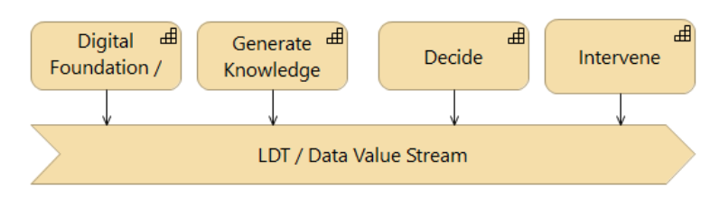
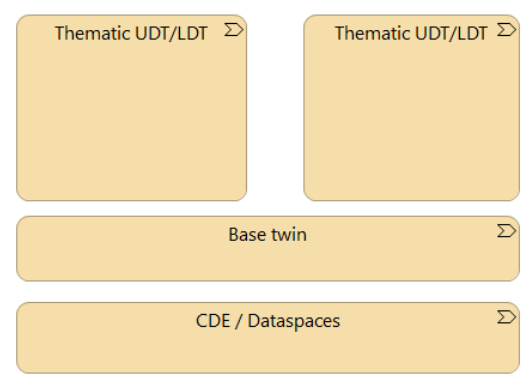

A Local Digital Twin (LDT) is a living digital picture of a city, neighbourhood or region. It combines data, models and views so people can see what is happening, understand why, try "what if" questions, and decide what to do.
Europe already has many of these twins. Most were built separately: different software, different data formats, different ways of talking to other systems. That is fine for a single project. It becomes a problem when cities want to reuse each other's work, connect twins across borders, or switch suppliers without starting over.
This reference architecture is not a product catalogue and not a single European mega-twin. It is a shared set of rules and patterns so independently built twins can still work together.
If you only read one chapter, read this summary.
Why standards? Interoperability is the point
If every twin speaks a private language, connecting them is expensive and fragile. Standards are the common language.
There are three kinds of "speaking the same language":
Technical — can the systems actually connect? (HTTP APIs, identity, catalogues.)
Semantic — do they mean the same thing by "building", "flood", or "energy label"?
Organisational — who is allowed to share what, under which rules?
Without all three, you get data dumps that nobody can safely reuse.
Open standards — for example OGC APIs, DCAT catalogues, OpenID Connect, and Data Space protocols — do three practical jobs:
They let a city mix building blocks from different suppliers.
They let a twin in one place consume a service from another.
They make procurement and replacement possible, because you buy a capability behind a known interface, not a closed stack.
A Digital Twin that cannot talk to the next Digital Twin is a silo with a 3D view. The network of twins is the actual product.
Patterns that keep you out of vendor lock-in
Lock-in happens when the way you store data, the way you send data, and the way you ask questions are all tied to one product — or even to one technology family.
These patterns break that knot:
API first, not platform first. Expose capabilities as well-defined APIs. The user interface is one consumer among many, not the product itself.
Federation, not a central platform. Data and services stay with their owners. Europe connects them; it does not vacuum them into one cloud.
Separate "what" from "how". The architecture describes building blocks (a catalogue, a simulation service, an identity service). Many products can implement the same block. You can replace a product without changing the architecture.
Portable deployment. Run on public cloud, private cloud, edge, or a municipal server. The architecture does not pick a vendor's cloud.
Reuse before you build. Prefer a shared European or national component over a custom one-off.
Decouple storage from exchange. How data is stored internally (files, a database, a knowledge graph) must not dictate how partners consume it. Partners talk to an API, not to the store.
Design time versus run time — two worlds, one ticket office
This last pattern is easy to miss, and expensive when it is missed.
Design time is when you agree the shape of information before anyone asks a question. A REST API with an OpenAPI description, or an OGC API with a known feature schema, is design-time: clients know the contract in advance. Storage and transport can differ. You can keep data in PostgreSQL and still serve GeoJSON over HTTP.
Run time is when the shape of the answer is defined when you ask the question. SPARQL against RDF is the classic example: the query creates the schema of the result. That is powerful. It is also tightly coupled. The store, the query language and the payload belong to the same technology family. If the public interface is SPARQL, every client must speak RDF. That tends to spread: once one part of the chain is RDF-only, the rest is pressured to become RDF-only too. That is the viral aspect of RDF — not a moral judgement, a network effect.
Both worlds are useful. They collide when a twin tries to be both a flexible knowledge graph and a practical service for many different clients, without an adapter in between. Think of two comic-book universes: each is consistent inside its own rules; they do not share a cast until someone builds a crossover. The crossover is not "make everyone speak RDF" or "forbid SPARQL". The crossover is a ticket office both audiences can use.
The practical way out is an abstraction layer: a stable API in front of whatever lives behind it.
Behind the API, a city may store data as tables, files, or RDF.
In front of the API, clients get a documented resource: features, processes, records, tiles, context entities.
If someone needs an ad-hoc SPARQL-style question, the result of that query can still be published through the same API, with a schema the next client can rely on.
For a network of twins, practical interoperability is usually higher with a REST-style API than with exposing the store's native language. REST does not forbid RDF internally. It forbids making RDF — or any other store format — the only way in.
What to remember
Many twins, one network — not one European mega-twin.
Open APIs and open standards are how twins collaborate without becoming the same product.
Keep storage, transport and query language from collapsing into one stack, proprietary or not.
Put an API between how data is kept and how data is used.
The chapters that follow are the detailed architecture: capabilities, services and technology patterns that put these ideas into practice. The expanded argument on design-time versus run-time contracts is in the Application & Technology chapter.
Status of this document
This is the final draft of this document. Edits resulting from consultations have been applied.
Note
Note
Overview
This chapter describes the Reference architecture for LDT Citiverse implementation patterns. More information about the LDT CiTiVERSE EDIC can be found on the website.
Introduction
This reference architecture contains guidelines and principles for a networked system of digital twins for the physical environment. This reference architecture is intended for everyone who plays a role in establishing a digital twin for the physical environment. The guidelines, starting points, principles, and standards presented in this document contribute to establishing a system consisting of many applications that form together a network of digital twins.
This document contains an "open" architecture. That is to say: the architecture can be applied by everyone, government and business alike. Application of the guidelines, principles, and standards from this document contributes to establishing an "ecosystem" that consists of many data sources and computational models to be connected. This makes it possible to connect data and models from diverse sectors and knowledge areas, and thereby create two- or three-dimensional images of the physical environment, support policy-making with decision models and simulations, or enable real-time control functionalities for operational processes.
Why this Architecture Exists
Cities and regions across Europe are increasingly using Local Digital Twins (LDTs) to support urban planning, service delivery, sustainability transitions and public participation. These digital twins combine data, simulation models, analytics and visualisation capabilities to create a shared understanding of the physical and social environment.
Many Local Digital Twin initiatives have emerged independently, often tailored to local needs and implemented using different technologies, data models and governance arrangements. While this diversity stimulates innovation, it also creates challenges for interoperability, reuse and collaboration across cities, regions and Member States.
The LDT CitiVERSE EDIC has been established to address these challenges. Its mission is to create a common European infrastructure that enables Local Digital Twins to exchange information, share services and collaborate across organisational and geographical boundaries. The long-term ambition is to support a network of interoperable Local Digital Twins that together form the foundation of the European CitiVERSE. This Reference Architecture provides a common architectural framework for achieving that ambition.
Purpose of this Reference Architecture
The purpose of this document is to describe the architectural principles, capabilities, building blocks and interoperability mechanisms required to realise a federated ecosystem of Local Digital Twins.
The architecture does not prescribe a single platform, technology stack or implementation approach. Instead, it defines a set of common patterns and architectural guardrails that enable independent implementations to work together.
Specifically, the Reference Architecture aims to:
Promote interoperability between Local Digital Twins.
Support reuse of solutions, building blocks and services.
Encourage adoption of open standards.
Provide a common architectural vocabulary.
Facilitate cross-border collaboration between cities and regions.
Support the development of shared European infrastructure and services.
Enable alignment with related European and national initiatives.
The architecture should therefore be understood as a framework for convergence rather than a specification for uniformity.
Scope
The LDT CiTiVERSE EDIC presents both an architecture of the EDIC itself as well as a reference architecture for LDT CiTiVERSE implementations. This is presented in the following overview picture.
This document describes the architecture in written form, a more formal definition of the architecture is described using Archimate, which can be found here.
The LDT CitiVERSE EDIC Reference Architecture focuses on the architectural aspects required to create and operate interoperable Local Digital Twins.
The architecture covers:
Business capabilities and services.
Application and technology building blocks.
Data sharing and interoperability mechanisms.
Semantic interoperability.
Digital Twin processing and orchestration patterns.
Shared infrastructure and common services.
Governance and enablement considerations.
The architecture intentionally spans multiple organisational levels, from individual Local Digital Twin implementations to European-scale infrastructure and collaboration mechanisms.
This document does not prescribe detailed implementation choices, procurement strategies or vendor-specific solutions.
Intended Audience
This document is intended for a broad audience involved in the development, governance and adoption of Local Digital Twins.
Typical readers include:
Enterprise architects
Solution architects
Digital Twin platform providers
Data space providers
Standards organisations
Policy makers
Programme managers
City and regional authorities
European Digital Infrastructure initiatives
If you are only occasionally involved with Digital Twins, start with the summary. It states the main principles, why standards matter for interoperability, and which design patterns reduce vendor lock-in.
Different chapters can then be read independently depending on the interests of the reader. Strategic audiences may focus on the principles, capabilities and governance aspects, while implementation teams may focus on the reference patterns, standards and building blocks.
Relationship to Other Initiatives
The Reference Architecture does not exist in isolation. It builds on existing work from a variety of European, national and community initiatives.
Particularly relevant are:
Public report on the LDT Toolbox detailed specifications requirements.
eGovERA and the European Interoperability Framework.
European Data Space initiatives.
Living-in.EU and the Minimal Interoperability Mechanisms (MIMs).
The EU LDT Toolbox and related Digital Europe projects.
National and regional Digital Twin initiatives.
The architecture should therefore be seen as part of a broader ecosystem of interoperable digital infrastructure initiatives.
1. Motivation and Architectural Guardrails
1.1 Why a European Reference Architecture for Local Digital Twins?
Europe is witnessing rapid growth in the number of Local Digital Twin (LDT) initiatives. Cities, regions and public authorities increasingly use digital twins to support spatial planning, mobility management, climate adaptation, energy transition, infrastructure management and citizen engagement.
While these initiatives share many common goals, they are often developed independently using different technologies, information models, governance arrangements and operational practices. This fragmentation limits the ability to reuse solutions, exchange information, collaborate across borders and create economies of scale.
The LDT CitiVERSE EDIC was established to create a common European framework that enables Local Digital Twins to interoperate and evolve into a networked ecosystem. Rather than promoting a single platform or technology stack, the EDIC aims to establish a shared architectural foundation that allows independently developed solutions to work together, exchange services and build on common assets.
The Reference Architecture therefore serves two complementary purposes:
To provide guidance for the development of interoperable Local Digital Twins.
To support the creation of shared European infrastructure, services and knowledge that can be reused across Member States.
The architecture recognises that innovation often occurs locally, while interoperability must be achieved globally.
1.2 From Digital Twins to a Network of Digital Twins
Traditional digital twins are often designed as standalone solutions tailored to a specific domain or organisation. The LDT CitiVERSE vision moves beyond this approach.
The long-term objective is to create a federated ecosystem of interoperable Local Digital Twins that can:
Exchange data and services.
Reuse common capabilities.
Participate in Data Spaces.
Share models and algorithms.
Support European collaboration around common societal challenges.
This vision requires a common architectural approach that balances local autonomy with European interoperability.
The architectural guardrails described in this chapter provide that balance.
1.3 Architectural Guardrails
Architectural guardrails are a set of design principles that guide all architecture and implementation decisions within the LDT CitiVERSE ecosystem. Unlike detailed technical specifications, guardrails provide direction while leaving room for local implementation choices and innovation. These guardrails should be considered mandatory design objectives for all future reference patterns, building blocks and implementations.
1.3.1 G1 – Interoperability by Design
Interoperability must be considered a primary design objective rather than an afterthought. Solutions should be designed from the outset to interact with external systems, organisations and communities through open interfaces and agreed standards.
1.3.1.1 Rationale
Interoperability is the foundation upon which a network of Local Digital Twins can emerge.
1.3.1.2 Implications
Open APIs are preferred over proprietary interfaces.
Information exchange should rely on recognised standards.
Data and services should be discoverable and reusable.
Components should be usable beyond their original implementation context.
Although local implementations may opt for less interoperable options, the EDIC will only offer components that comply with this guardrails.
1.3.2 G2 – Federation by Default
The architecture assumes a distributed ecosystem rather than a centralised platform.
Data, services and governance responsibilities should remain as close as possible to their source while still participating in a wider network.
1.3.2.1 Rationale
Federation preserves autonomy while enabling collaboration at European scale.
1.3.2.2 Implications
Data remains under local governance wherever possible.
Services may be distributed across organisations.
Multiple implementations can coexist.
Shared infrastructure complements local infrastructure rather than replacing it.
1.3.3 G3 – API First
Capabilities should be exposed through well-defined APIs before user interfaces are considered.
An API is not only a convenience for developers. It is the contract that decouples how information is stored from how it is exchanged. Clients should depend on that contract, not on the native language of the store, the query engine, or a particular vendor's platform.
1.3.3.1 Rationale
The architecture emphasises service ecosystems rather than monolithic applications. Practical interoperability across a network of Local Digital Twins is higher when partners share a stable, documented interface than when they must all adopt the same storage format or query language.
1.3.3.2 Implications
Services are reusable across multiple applications.
Automation becomes easier.
Tool interoperability is improved.
Integration costs are reduced.
Storage format, transport format and query language are allowed to differ.
The public interface of a building block is a documented API, not a direct handle on the database or triple store.
1.3.4 G4 – Reuse Before Build
Before creating a new component, architects and implementers should determine whether an existing capability, service, standard or building block can be reused.
1.3.4.1 Rationale
The EDIC exists to create economies of scale and scope through reuse.
1.3.4.2 Implications
Preference for shared services.
Preference for common building blocks.
Preference for existing European assets.
Avoidance of unnecessary duplication.
1.3.5 G5 – Semantic Interoperability First
Systems should exchange meaningful information rather than simply exchanging data.
A shared understanding of concepts, relationships and context is required to support collaboration across domains and countries.
1.3.5.1 Rationale
Without semantic interoperability, technical interoperability alone provides limited value.
1.3.5.2 Implications
Use of shared vocabularies.
Use of semantic technologies where appropriate.
Explicit metadata.
Traceable information models.
Semantic assets (vocabularies, ontologies, profiles) travel with the API contract. They do not require every client to query a knowledge graph in its native language.
1.3.6 G6 – Open Standards Before Proprietary Solutions
The architecture promotes the adoption of open and internationally recognised standards.
1.3.6.1 Rationale
Open standards reduce barriers to participation and strengthen long-term sustainability.
1.3.6.2 Implications
Preference for standards-based interfaces.
Preference for open information models.
Vendor-neutral implementations.
Easier integration between solutions.
1.3.7 G7 – Data as a Shared Asset
Data should be treated as a strategic asset that can be reused across multiple use cases while respecting governance, privacy and intellectual property constraints.
1.3.7.1 Rationale
The value of Local Digital Twins depends on the quality and availability of the data they use.
1.3.7.2 Implications
Data should be discoverable.
Metadata should be published.
Provenance should be traceable.
Data should follow FAIR principles where possible.
1.3.8 G8 – Human-Centred Digital Twins
Technology exists to support people, communities and decision-makers.
The success of a Local Digital Twin should not be measured solely by technical sophistication but by its contribution to better decisions and outcomes.
1.3.8.1 Rationale
Digital Twins are tools for people, not ends in themselves.
1.3.8.2 Implications
Focus on user needs.
Support transparency and explainability.
Enable participation.
Promote accessibility and inclusiveness.
1.3.9 G9 – Trust, Privacy and Security by Design
Trust is essential for collaboration across organisations and borders.
Security and privacy considerations must therefore be integrated into every layer of the architecture.
1.3.9.1 Rationale
Trust is a prerequisite for sharing data, services and infrastructure.
1.3.9.2 Implications
Secure-by-design implementations.
Strong identity and access management.
Data protection compliance.
Transparent governance arrangements.
1.3.10 G10 – Technology Independence
The architecture should avoid prescribing specific vendors, products or deployment environments.
1.3.10.1 Rationale
The architecture should remain relevant despite changing technologies.
1.3.10.2 Implications
Infrastructure portability.
Cloud neutrality.
Support for hybrid deployments.
Support for future technological evolution.
Public interfaces specified as API contracts, so storage engines and query languages can be replaced without rewriting clients.
2. Strategy
2.1 Overview
The LDT CitiVERSE reference architecture is organised around a number of capabilities. A Local Digital Twin (LDT) is not a single application. It is a composition of interoperable capabilities that together enable cities and regions to integrate data, generate knowledge, support decisions and act on real-world situations.
The architecture is structured around a central value stream — the LDT / Data Value Stream — which represents the progression from data integration to actionable outcomes. This value stream is supported by both technical and community enablement capabilities.
LDT CitiVERSE capabilities are grounded in the broader eGovERA capability framework, which provides the European public-sector architecture context for Digital Twin, Knowledge Management, Data Management and Artificial Intelligence.
2.2 LDT / Data Value Stream

The LDT / Data Value Stream defines how a Local Digital Twin creates value.
2.3 LDT CitiVERSE Capabilities
The value stream consists of four sequential capability stages:
Digital Foundation / Integration
The LDT establishes a technical and data foundation that connects data sources, services and components. This stage provides the interoperability layer on which all subsequent capabilities depend.
Generate Knowledge
Integrated data is transformed into knowledge, insight and intelligence. This stage encompasses analysis, modelling and AI-driven inference that produce actionable information for stakeholders.
Decide
The LDT supports evidence-based decision-making. Decision makers receive insight and recommendations derived from the knowledge generated in the previous stage.
Intervene
Decisions are connected to concrete actions or interventions in the physical, organisational or policy environment. This stage closes the loop between digital insight and real-world change.
Furthermore there are two enabling capabilities:
Technical Enablement
Reusable technical building blocks and platform services
Community Enablement
Adoption support, knowledge sharing and community building
These capabilities together define what the LDT CitiVERSE ecosystem must provide to cities, regions and their partners.
2.4 Types of Local Digital Twins
Local Digital Twins are categorised by their level of analytical and decision-support maturity. Each type builds on the capabilities of the preceding type. The main premise is that not all implementations need the same type of LDT, depending on the requirements the right type of LDT should be implemented. Also an organisation will likely have multiple LDT's for different projects in different lifecycle stages. While they should be based on the same common core components, the specific type needs to be tailored to the needed requirements.
2.4.1 Conformance Profiles
Not every Local Digital Twin requires the same capabilities, level of sophistication, or operational complexity.
The LDT CitiVERSE Reference Architecture therefore defines a series of Conformance Profiles. These profiles establish a common understanding of the minimum capabilities that an implementation must provide in order to be considered a specific type of Local Digital Twin.
The profiles serve several purposes:
Provide guidance for communities implementing Local Digital Twins.
Support procurement and solution selection.
Enable interoperability testing and validation.
Support future EDIC certification schemes.
Provide a roadmap for the gradual evolution of Local Digital Twin implementations.
The profiles are cumulative: each profile builds upon the capabilities of the previous profile.
2.4.1.1 Common Foundation Requirements
All Local Digital Twins participating in the LDT CitiVERSE ecosystem must provide a common foundation that supports interoperability and collaboration.
2.4.1.2 Mandatory Capabilities
Digital Foundation / Integration
Technical Enablement
Community Enablement
2.4.1.3 Mandatory Characteristics
Standards-based APIs
Metadata publication and discovery
Identity and access management
Open interoperability interfaces
Conformance to the architectural guardrails
Participation in federated discovery mechanisms
These requirements represent the minimum baseline for participation in the LDT CitiVERSE ecosystem.
2.4.2 Profile 1 – Descriptive LDT
2.4.2.1 Purpose
A Descriptive LDT provides a real-time or near-real-time representation of the current state of an asset, area, system or environment.
2.4.2.2 Primary Question
What is happening?
2.4.2.3 Required Capabilities
Capability
Requirement
Digital Foundation / Integration
Required
Data Ingestion
Required
Visualisation
Required
Metadata Management
Required
Discovery Services
Required
2.4.2.4 Typical Building Blocks
Data Catalogue
Data Store
Context Management Services
Dashboard Services
Map Viewers
Sensor Integration Services
2.4.2.5 Typical Outputs
Operational dashboards
Current status views
Situation awareness
Shared operational picture
2.4.3 Profile 2 – Diagnostic LDT
2.4.3.1 Purpose
A Diagnostic LDT explains observed conditions and identifies underlying causes.
2.4.3.2 Primary Question
Why is it happening?
2.4.3.3 Additional Required Capabilities
Capability
Requirement
Descriptive Profile
Required
Knowledge Generation
Required
Analytics Services
Required
Correlation Analysis
Required
2.4.3.4 Typical Building Blocks
Analytics Services
Monitoring Services
Data Quality Services
Event Processing Services
Knowledge Graph Services
2.4.3.5 Typical Outputs
Root-cause analysis
Performance diagnostics
Explanatory insights
Operational intelligence
2.4.4 Profile 3 – Predictive LDT
2.4.4.1 Purpose
A Predictive LDT forecasts future conditions using historical and real-time information.
2.4.4.2 Primary Question
What is likely to happen?
2.4.4.3 Additional Required Capabilities
Capability
Requirement
Diagnostic Profile
Required
Predictive Analytics
Required
Forecasting
Required
Simulation
Required
2.4.4.4 Typical Building Blocks
Forecasting Services
Machine Learning Models
Simulation Engines
Scenario Data Services
2.4.4.5 Typical Outputs
Forecasts
Trend predictions
Early-warning indicators
Impact forecasts
2.4.5 Profile 4 – Prospective LDT
2.4.5.1 Purpose
A Prospective LDT evaluates alternative futures by exploring the consequences of potential interventions before they are applied.
2.4.5.2 Primary Question
What would happen if we acted?
2.4.5.3 Additional Required Capabilities
Capability
Requirement
Predictive Profile
Required
Scenario Management
Required
What-if Analysis
Required
Model Composition
Required
2.4.5.4 Typical Building Blocks
Computational Models
Scenario Engines
Model Orchestration Services
Intervention Analysis Services
2.4.5.5 Typical Outputs
Scenario comparisons
Impact assessments
Alternative futures
Policy evaluation
2.4.6 Profile 5 – Prescriptive LDT
2.4.6.1 Purpose
A Prescriptive LDT recommends actions based on data, models and simulated outcomes.
2.4.6.2 Primary Question
What should we do?
2.4.6.3 Additional Required Capabilities
Capability
Requirement
Prospective Profile
Required
Decision Support
Required
Recommendation Services
Required
Optimisation
Required
2.4.6.4 Typical Building Blocks
Decision Support Systems
Optimisation Engines
Recommendation Services
Policy Evaluation Services
2.4.6.5 Typical Outputs
Ranked interventions
Action recommendations
Resource optimisation
Decision support products
2.4.7 Profile 6 – Autonomous LDT
2.4.7.1 Purpose
An Autonomous LDT continuously evaluates situations and can automatically execute or propose interventions within agreed governance constraints.
2.4.7.2 Primary Question
What is the right action and how can it be implemented?
2.4.7.3 Additional Required Capabilities
Capability
Requirement
Prescriptive Profile
Required
Autonomous Decision Support
Required
Adaptive Learning
Required
Automated Orchestration
Required
Governance Controls
Required
2.4.7.4 Typical Building Blocks
Agent-based AI Services
Workflow Orchestration
Adaptive Learning Services
Policy Enforcement Services
Human Oversight Services
2.4.7.5 Typical Outputs
Automated interventions
Dynamic optimisation
Self-learning behaviour
Closed-loop operations
2.5 Capability Progression
The six conformance profiles represent an increasing level of maturity and capability.
Importantly, higher maturity levels do not replace lower ones. A Prospective Local Digital Twin continues to provide descriptive, diagnostic and predictive functionality while adding progressively more advanced analytical and decision-support capabilities. Not all themes or solutions need to evolve to the higher levels.
2.6 Selecting an Appropriate Profile
Not every use case requires an Autonomous Local Digital Twin.
For example:
Use Case
Typical Profile
Shared Operational Picture
Descriptive
Infrastructure Monitoring
Diagnostic
Flood Forecasting
Predictive
Urban Planning Scenarios
Prospective
Traffic Optimisation
Prescriptive
Dynamic Energy Management
Autonomous
Communities should select the profile that best matches the objectives, risks, governance requirements and operational context of their implementation.
The Reference Architecture therefore supports a diversity of Local Digital Twins while ensuring that implementations remain interoperable and aligned with a common European architectural framework.
2.7 LDT Ecosystem
The different types of LDT's can be deployed for different themes within an organisation. This leads to an ecosystem of a common base with shared components with additional capabilities taylored for the specific theme and type of requirements. That is to say, there is not one Digital Twin in an organisation, but a series of connected Local Digital Twins within or even across organisations.

2.8 Enablement Frameworks
Scaling LDT adoption across cities, regions and communities requires two complementary frameworks realizing the respective enablement capabilities:
LDT CitiVERSE Technology Framework
Defines the technical components, platform services, integrations and reusable building blocks that implement the LDT capability ecosystem.
LDT CitiVERSE Enablement Framework
Defines the organisational, community and adoption capabilities that support the uptake, operation and governance of Local Digital Twins across participating organisations.
2.9 Artificial Intelligence
Artificial Intelligence is a cross-cutting capability within the LDT CitiVERSE architecture. It contributes primarily to the Generate Knowledge stage of the value stream, through two specialised subcapabilities:
Urban Intelligence & ML Inference — the application of machine learning models to urban data to generate intelligence and predictions
Collaborative Knowledge Training — the shared development and improvement of AI models across communities and organisations
AI is also central to the Autonomous LDT type, where adaptive and generative AI enable continuous, self-sustaining decision support.
Note
2.10 Relationship to eGovERA
LDT CitiVERSE capabilities are specialisations of capabilities defined in the eGovERA European Government Enterprise Reference Architecture. The mapping is as follows:
eGovERA Capability
LDT CitiVERSE Specialisation
Digital Twin
LDT types and Data Value Stream
Knowledge Management
Generate Knowledge capability
Data Management
Digital Foundation / Integration
Artificial Intelligence
Urban Intelligence, ML Inference, Collaborative Training
This alignment ensures that the LDT CitiVERSE architecture is compatible with the broader European public-sector architecture landscape and can be adopted consistently across member states.
3. Business & Application
3.1 Overview
The Business & Application layer describes how Local Digital Twin capabilities are realised through reusable business services, application services and interoperable information flows.
Where the Strategy layer explains why Local Digital Twins are needed and which capabilities they provide, this layer explains how those capabilities are implemented through a combination of reusable services and architectural building blocks.
The architecture promotes a modular and federated approach in which Local Digital Twins are assembled from interoperable components rather than implemented as monolithic solutions. Individual implementations may vary in scope and technology choices, but share a common set of service patterns and interfaces that enable interoperability and reuse across cities, regions and Member States.
The Business & Application layer therefore acts as the bridge between strategic objectives and technology implementation.
3.2 Architectural Intent
The primary objective of this layer is to translate LDT capabilities into reusable services that can be shared across multiple implementations.
Three architectural principles drive this layer:
Principle
Description
Interoperability by Design
Services expose capabilities through standard interfaces and information models, allowing independent implementations to collaborate and exchange information.
Reuse Before Build
Capabilities should be realised using reusable application services and building blocks wherever possible. Solutions should avoid creating bespoke services that duplicate existing functionality.
Federation by Default
Services may be deployed by different organisations while remaining discoverable and interoperable within a shared ecosystem.
3.3 Business Service Architecture
3.3.1 Business Services as Public Capabilities
Business services provide value directly to communities, public authorities, businesses and citizens.
Rather than focusing on individual software products, the reference architecture focuses on the outcomes these services provide.
A single business service may be realised by multiple application services, and a single application service may contribute to multiple business services.
This separation allows implementations to evolve without changing the business capabilities they support.
3.3.2 Context Awareness
Context Awareness services create a trusted and shared understanding of the current state of an asset, environment or urban system.
3.3.2.1 Purpose
Provide operational situational awareness across organisational and domain boundaries.
3.3.2.2 Typical Functions
Sensor integration
Context aggregation
Environmental monitoring
Asset monitoring
Event detection
Operational awareness
3.3.2.3 Supported LDT Profiles
Descriptive
Diagnostic
Predictive
3.3.3 Co-Creation and Participation
Participation services support collaborative planning and stakeholder engagement.
3.3.3.1 Purpose
Enable communities, governments and stakeholders to collectively explore information, evaluate alternatives and support decision-making.
3.3.3.2 Typical Functions
Citizen participation
Collaborative planning
Stakeholder engagement
Feedback collection
Public consultation
Scenario evaluation
3.3.3.3 Supported LDT Profiles
Prospective
Prescriptive
3.3.4 Digital Twin Visualisation
Visualisation services provide a human-centred representation of information, models and simulations.
3.3.4.1 Purpose
Transform complex information into understandable insights.
3.3.4.2 Typical Functions
Map visualisation
3D city models
Digital Twin dashboards
Immersive environments
Scenario visualisation
Reporting
3.3.4.3 Supported LDT Profiles
All Profiles
3.3.5 Data Exchange and Collaboration
Data Exchange services support trusted collaboration between organisations.
3.3.5.1 Purpose
Enable discovery, sharing and controlled access to information resources.
3.3.5.2 Typical Functions
Data publication
Data discovery
Data sharing
Federated access
Metadata management
Data Space participation
3.3.5.3 Supported LDT Profiles
All Profiles
3.3.6 Capability Development and Knowledge Sharing
Capability Development services support organisational maturity and community enablement.
3.3.6.1 Purpose
Accelerate LDT adoption and knowledge exchange across communities.
3.3.6.2 Typical Functions
Maturity assessments
Capability development
Community support
Knowledge sharing
Training
Best-practice dissemination
3.4 Application Service Architecture
Business services are realised through a collection of reusable application services.
Application services are intentionally technology-neutral. Different products may implement the same service as long as they conform to the agreed interfaces and information contracts.
3.4.1 Data Services
3.4.1.1 Purpose
Provide the foundation for storing, exchanging and managing information.
3.4.1.2 Responsibilities
Data storage
Metadata management
Data cataloguing
Semantic enrichment
Data transformation
Provenance management
3.4.1.3 Typical Building Blocks
Data Catalogues
Metadata Repositories
Knowledge Graphs
Context Brokers
Data Transformation Services
3.4.1.4 Supported Formats
JSON
GeoJSON
JSON-LD
RDF
GeoParquet
NetCDF
Zarr
DCAT-AP
3.4.2 Processing Services
3.4.2.1 Purpose
Transform information into knowledge.
Processing services sit at the heart of the Generate Knowledge capability and provide analytical and computational functionality.
3.4.2.2 Responsibilities
Data processing
Analytics
Machine learning
Artificial intelligence
Simulation
Scenario analysis
Forecasting
3.4.2.3 Typical Building Blocks
Simulation Engines
AI Services
Analytics Services
Computational Models
Workflow Engines
3.4.3 Visualisation Services
3.4.3.1 Purpose
Provide meaningful and accessible views of information.
3.4.3.2 Responsibilities
Interactive dashboards
Geospatial visualisation
3D environments
XR visualisation
Reporting
3.4.3.3 Typical Building Blocks
Dashboard Services
Map Services
Digital Twin Viewers
XR Platforms
3.4.4 Participation Services
3.4.4.1 Purpose
Enable interaction between people and digital twin systems.
3.4.4.2 Responsibilities
Consultation
Stakeholder engagement
Collaborative planning
Decision support workshops
Feedback collection
3.4.4.3 Typical Building Blocks
Participation Platforms
Collaboration Portals
Consultation Services
3.4.5 Integration Services
3.4.5.1 Purpose
Connect independent systems and services into a coherent ecosystem.
3.4.5.2 Responsibilities
Service federation
API management
Identity federation
Information mediation
Logging and monitoring
3.4.5.3 Typical Building Blocks
API Gateways
Identity Providers
Service Registries
Federation Services
Observability Platforms
3.5 Service Realisation Pattern
A recurring pattern throughout the architecture is that business services are realised through multiple application services working together.
This pattern allows services to be reused across domains while maintaining a consistent user experience.
3.6 Open Interfaces and Standards
To enable interoperability, all application services MUST expose their functionality through open interfaces.
The EDIC will not offer components that do not comply to this.
Local implementations in cities and regions can deviate from this standard, being aware that this will limit the interoperability and the option to offer their building block for reuse.
The public interface of a building block is a documented API. It is not a direct handle on the storage engine. Storage format, transport format and query language MAY differ. Clients MUST be able to participate without speaking the native language of the store. The Application & Technology chapter develops this as the distinction between design-time contracts and run-time queries.
Below you find a first list of standards that will be part of the EDIC interoperability requirements. This list will continuously be maintained by the EDIC and will change over time. Selection is based on 2 criteria:
Standards should be open.
Standards should be official or in the process of becoming official through a recognised institute (CEN/CENELEC, ETSI, ISO), or should result from recognised industry standardisation such as OGC.
3.6.1 API Standards
OGC API Features
OGC API Processes
OGC API Records
OGC API Tiles
NGSI-LD *
Optional or internal interfaces (run-time queries, expert access, or capabilities behind the API):
SPARQL
SPARQL is a first-class tool for knowledge graphs and ad-hoc questions. It is not a substitute for a REST-style public contract. If SPARQL is exposed, the same information (or the operational subset other twins need) SHOULD also be available through one of the design-time APIs above. EDIC-offered components MUST provide that design-time API.
*) NGSI-LD illustrates the intended split: a linked-data information model offered as a REST API of entities, without requiring every client to issue SPARQL.
3.6.2 Trust and Identity
OpenID Connect
OIDC Federation
OID4VC
Verifiable Credentials
3.6.3 Observability
OpenTelemetry
Structured Logging
Monitoring Services
3.6.4 Data Sharing
Dataspace Protocol
IDS Catalog Protocol
Federated Discovery Mechanisms
3.7 Information Models and Semantic Assets
Information interoperability depends on the use of shared information models and semantic assets.
The architecture therefore promotes the use of common vocabularies, ontologies and information models that can be reused across Local Digital Twin implementations.
These assets travel with the API contract — as metadata, profiles, JSON-LD contexts or declared conformance — so that meaning is shared without forcing every client onto the same storage or query stack.
3.7.1 Examples
DCAT-AP
PROV-O
SAREF
IFC
Linked Open Vocabularies
4. Application & Technology
4.1 Overview
The Application & Technology layer defines the technical foundation of the LDT CitiVERSE ecosystem.
While the Business & Application layer describes the services that realise Local Digital Twin capabilities, this layer describes the technical platform required to implement, operate and scale those services.
The architecture is based on five fundamental concepts:
Federated infrastructure
Shared platform services
Semantic interoperability
Orchestration
Infrastructure-independent deployment
Together these concepts enable Local Digital Twins to be assembled from reusable and interoperable building blocks rather than monolithic applications.
The architecture promotes Local Digital Twins as distributed ecosystems that transform data into knowledge, decisions and interventions through reusable services, common standards and shared infrastructure. This approach allows cities, regions and Member States to collaborate while maintaining local ownership, governance and technical autonomy.
4.2 Technical Architecture Principles
The technical architecture implements and operationalises the architectural guardrails introduced earlier in this document.
Specifically, this layer demonstrates how:
Interoperability by Design is realised through open interfaces.
Federation by Default is realised through distributed infrastructure.
Semantic Interoperability is realised through shared information models.
Reuse Before Build is realised through common platform services.
Technology Independence is realised through portable deployment models.
The Application & Technology layer defines the infrastructure blueprint for the LDT CitiVERSE ecosystem.
4.3 Technology Architecture Stack
The architecture is organised into four logical layers.
Business Services
↓
Application Services
↓
Technology Services
↓
Infrastructure
Each layer depends on the services of the layer below while remaining insulated from implementation details.
Layer
Description
Examples
Business Services
The business layer provides the stakeholder-facing services described in the previous chapter.
Digital Participation; Context Awareness; Decision Support; Urban Planning; Infrastructure Management
Application Services
Application services realise business services through reusable functionality.
Data Management; Visualisation; Simulation; Analytics; Participation; Identity
Technology Services
Technology services provide reusable platform capabilities.
API Management; Workflow Orchestration; Context Management; Event Processing; Logging; Monitoring
Infrastructure
Infrastructure provides the execution environment.
Cloud Infrastructure; Edge Infrastructure; Data Space Infrastructure; Compute Resources; Storage Services; Networking Services
4.4 Federated Infrastructure Pattern
4.4.1 Purpose
The LDT CitiVERSE ecosystem is designed as a federation of independent infrastructures rather than a single central platform.
This allows communities to maintain control over their data, operations and governance while still participating in a broader European ecosystem.
4.4.2 Architectural Rationale
A federated approach:
reduces dependency on central infrastructure;
supports national and local governance requirements;
enables gradual adoption;
aligns with Data Space principles;
supports cross-border collaboration.
4.4.3 Typical Components
Data Spaces
Federated Catalogues
Shared Registries
Identity Federations
Shared Trust Frameworks
4.4.4 Expected Outcomes
Cross-community interoperability
Local autonomy
European-scale collaboration
4.5 Shared Services Architecture
4.5.1 Purpose
Many Local Digital Twin implementations require similar technical capabilities.
Rather than implementing these capabilities repeatedly, the architecture promotes the reuse of common services.
Shared services provide common capabilities that can be consumed by multiple applications, organisations or Digital Twins.
4.5.2 Examples
4.5.2.1 Data Services
Provide:
storage
metadata management
discovery
semantic enrichment
4.5.2.2 Identity Services
Provide:
authentication
authorisation
trust management
4.5.2.3 Knowledge Services
Provide:
analytics
reasoning
AI inference
simulation
4.5.2.4 Observability Services
Provide:
logging
monitoring
auditing
performance insights
4.6 Orchestration Architecture
4.6.1 Purpose
Orchestration coordinates the interaction between services and building blocks.
Rather than embedding workflow logic within individual applications, orchestration manages the execution sequence between independent components.
4.6.2 Responsibilities
Workflow execution
Service chaining
Event coordination
Automation
Dependency management
4.6.3 Architectural Significance
Orchestration allows individual building blocks to remain loosely coupled while participating in complex Digital Twin workflows.
This enables both flexibility and interoperability.
4.6.3.1 Example
Sensor Data
↓
Data Processing
↓
Analytics
↓
Simulation
↓
Visualisation
↓
Decision Support
Each step may be implemented by an independent service operated by a different organisation.
4.7 Semantic Interoperability Architecture
4.7.1 Purpose
Technical interoperability alone is insufficient for Digital Twin ecosystems.
Systems must also understand the meaning of exchanged information.
The semantic interoperability layer provides this shared understanding.
4.7.2 Responsibilities
Semantic alignment
Context definition
Metadata management
Knowledge representation
Vocabulary management
4.7.3 Typical Technologies
RDF
JSON-LD
OWL
Knowledge Graphs
Ontologies
DCAT-AP
SAREF
4.7.4 Expected Benefits
Cross-domain integration
Cross-border interoperability
Reusable information models
Improved discoverability
Semantic technologies are a means to shared meaning. They are not, by themselves, a public integration strategy. The next section explains why.
4.8 Design-time Contracts, Run-time Queries, and the API Abstraction
Two legitimate ways of working with information meet inside a Local Digital Twin. If they are not separated on purpose, they collapse into one stack — and interoperability suffers.
Call them design time and run time. They are as distinct as two comic-book universes: each is consistent on its own terms; they do not automatically share a cast. The architecture's job is not to pick a winner. It is to put a common ticket office in front of both.
This section operationalises guardrails G3 (API First), G5 (Semantic Interoperability First), G6 (Open Standards) and G10 (Technology Independence).
4.8.1 The two worlds
4.8.1.1 Design-time schema
At design time, producers and consumers agree the shape of information before a question is asked.
Typical artefacts:
An OpenAPI description of resources, operations and error codes.
A JSON Schema, XML Schema, or OGC Features schema for a collection.
A profile that says which properties are mandatory, which vocabularies apply, and which encodings are offered.
Typical public interfaces:
OGC API — Features, Processes, Records, Tiles
NGSI-LD as a REST API of context entities
Ordinary REST resources documented with OpenAPI
The client can be written against a contract. Storage can be anything that can fulfil that contract: files, a relational store, an object store, or a knowledge graph. Transport is HTTP with a documented payload. The client does not need to know how the data is kept.
4.8.1.2 Run-time schema
At run time, the shape of the answer is defined when the question is asked.
The classic case is SPARQL against RDF. A SELECT query invents the columns of the result set. A CONSTRUCT query invents the graph that comes back. The schema is a consequence of the query, not a resource that existed beforehand.
This is genuinely powerful. Expert users can ask questions the original publisher did not anticipate. Knowledge graphs can grow without a new API version for every new relationship.
The cost is coupling. In this world, storage format, query language and transport format tend to be the same family of technology. If the public interface is SPARQL, the client must:
speak SPARQL;
know the publisher's ontology in enough detail to write a correct query;
accept that the result has no stable resource schema until that particular query is frozen.
The next system that wants to reuse the result is then pressured to stay in RDF as well. That is the viral aspect of RDF: not that RDF is closed — it is an open family of standards — but that exposing the store's native language as the public interface forces every participant to adopt that language. Flexibility at the query prompt becomes rigidity in the ecosystem.
The same pattern appears with other native-query interfaces (a vendor's SQL dialect exposed on the internet, a proprietary graph API, a product-specific "data lake query"). RDF is the open and important instance of the pattern in Digital Twin practice; it is not the only one.
4.8.2 Why practical interoperability is usually higher with a REST API
Flexibility of query and interoperability of systems are not the same quality.
A SPARQL endpoint maximises what one skilled client can ask. A documented REST API maximises how many different clients can participate without sharing a technology stack.
For a federated network of Local Digital Twins — many organisations, many suppliers, many programming environments, many levels of expertise — the second quality is the scarce one.
A REST API with a design-time contract:
can be consumed by any HTTP client;
can be described, tested and procured against OpenAPI or an OGC conformance class;
can version its resources;
can offer several encodings of the same resource (GeoJSON, JSON-LD, GML, …);
can sit in front of RDF, SQL, files or a mix, without advertising that mix to every caller.
A public SPARQL endpoint:
requires RDF literacy in every client;
couples callers to the publisher's ontology and to changes in that ontology;
makes it hard to know, at design time, which properties a downstream process can rely on;
tends to pull neighbouring systems into the same stack.
This is why the architecture treats open REST-style APIs as the default public interface between Local Digital Twins, and treats native query languages (including SPARQL) as powerful capabilities behind that interface, or as additional expert interfaces, not as a substitute for it.
Semantic interoperability is not given up. Vocabularies, ontologies and profiles still define meaning. They travel with the API — as JSON-LD contexts, as DCAT metadata, as declared conformance to a profile — rather than requiring every consumer to query a triple store.
NGSI-LD is a useful illustration of the distinction: it carries a linked-data model, but it is offered as a REST API of entities, not as "the client must speak SPARQL".
4.8.3 The collision
Problems start when the two worlds are treated as one:
The storage format is used as the transport format.
The only public schema is the result of a query.
A city cannot replace the store without replacing every client.
A second city cannot consume the first city's twin unless it adopts the same graph stack.
Procurement buys a platform rather than a capability behind a contract.
That is vendor lock-in in slow motion — even when every piece of the stack is open source. Lock-in is dependence on a stack you cannot peel apart, not only dependence on a commercial licence.
4.8.4 The pattern: an API as abstraction layer
The recommended pattern is an explicit abstraction layer.
Clients of the twin
(other twins, apps, tools, Data Spaces)
│
│ design-time contract
│ (REST / OGC API / NGSI-LD / OpenAPI)
▼
┌───────────────────┐
│ API abstraction │ ← public interoperability surface
└─────────┬─────────┘
│
┌──────────┼──────────────────┐
▼ ▼ ▼
Design-time Run-time Mixed stores
resources queries (files, DB,
(tables, (SPARQL, object store,
files, SQL, …) RDF, …)
catalogues)
Responsibilities of the abstraction layer:
Hide storage. Clients never attach to the database, file system or triple store.
Publish design-time resources. Collections, processes, records, tiles and context entities have a documented schema before they are called.
Wrap run-time results. If a SPARQL (or SQL, or other) query is the right way to produce an answer, the result is still published as a resource with a schema: a feature collection, a process output, a named graph snapshot, a fileset with metadata. The query may be ephemeral; the contract of the published result is not.
Carry meaning. Metadata, vocabularies and provenance accompany the resource. Meaning is not locked inside a query that only RDF clients can run.
Allow several encodings. JSON, GeoJSON, JSON-LD, and where needed RDF serialisations, as options on the same resource — not as a requirement that every client pick RDF.
4.8.4.1 What this means for SPARQL and RDF
RDF, OWL, JSON-LD and SPARQL remain first-class tools for:
semantic alignment and vocabulary management;
internal knowledge graphs;
expert exploration and data science;
publishing query results through the API;
optional additional endpoints for clients that genuinely need them.
They are not the default handshake of the CitiVERSE federation.
If an implementation exposes SPARQL, it SHOULD also expose the same information (or the operational subset that other twins need) through a design-time REST API. EDIC-offered components MUST do so.
4.8.4.2 What this means for REST
REST-style APIs in this architecture are not "JSON instead of semantics". They are the stable surface on which semantics, data and processes are offered to a heterogeneous network.
Where a resource has a well-known meaning, declare it: JSON-LD context, DCAT-AP metadata, a profile URI, a conformance class. That is semantic interoperability without viral coupling of the store.
4.8.5 Implications for building blocks
Concern
Design-time (default public surface)
Run-time (behind the API, or expert)
When is the schema known?
Before the client is written
When the query is issued
Typical interface
OGC API, NGSI-LD, OpenAPI
SPARQL, ad-hoc SQL, graph explorers
Storage
Hidden
Hidden
Transport
HTTP + documented encodings
Native result of the query language
Client burden
HTTP + the resource contract
Query language + ontology + parser
Risk if used as the only public interface
Over-rigid resources, missed questions
Viral stack, weak substitutability
Mitigation
Profiles, versioning, optional query APIs
Wrap results as resources; keep SPARQL optional
Architecture Building Blocks (catalogues, feature access, process execution, context management) are specified at the API-contract level. Solution Building Blocks may use RDF, relational technology, or both. Substitutability is evaluated against the contract, not against the store.
4.8.6 Expected outcomes
Cities can change storage technology without rewriting every client.
A twin that uses a knowledge graph internally can still participate in a REST-based federation.
A twin that does not use RDF is not excluded from the network.
Expert SPARQL users keep their power; the rest of the ecosystem is not forced to become SPARQL users.
Vendor and stack lock-in are reduced because the public dependency is an open API, not a product and not a single technology family.
4.9 The Digital Twin Processing Pipeline
A recurring pattern is the transformation of data into knowledge and action.
This pattern realises the LDT Value Stream introduced in the Strategy chapter.
Data Sources
↓
Data Integration
↓
Semantic Enrichment
↓
Processing
↓
Analytics & AI
↓
Simulation
↓
Visualisation
↓
Decision Support
↓
Intervention
The individual stages may be realised by separate services or organisations while collectively forming a coherent Digital Twin ecosystem.
The result is a Digital Twin that acts as a knowledge-generation system rather than merely a data repository.
4.10 Infrastructure-Agnostic Deployment
4.10.1 Purpose
The reference architecture deliberately avoids dependence on specific infrastructure providers.
Solutions should remain portable across different execution environments.
4.10.2 Supported Deployment Models
Public Cloud
Private Cloud
Sovereign Cloud
Edge Computing
Data Space Infrastructure
National Platforms
Municipal Platforms
and all hybrid combinations of the above
4.10.3 Architectural Benefits
Technology independence
Reduced lock-in
Greater resilience
Increased portability
4.11 Architecture Building Blocks and Solution Building Blocks
The architecture distinguishes between:
4.11.1 Architecture Building Blocks (ABBs)
Architecture Building Blocks describe reusable architectural capabilities and patterns.
Examples include:
Data Catalogue
Simulation Service
Identity Service
Semantic Broker
ABBs define which capability is required.
4.11.2 Solution Building Blocks (SBBs)
Solution Building Blocks are concrete implementations of ABBs.
Examples include:
Products
Open-source projects
Cloud services
Components from the EU LDT Toolbox
SBBs define how a capability is implemented.
This distinction enables vendor neutrality while supporting practical implementation. Substitutability is judged against the API contract of the Architecture Building Block, not against the storage format or query language of a particular Solution Building Block. See Design-time Contracts, Run-time Queries, and the API Abstraction above.
4.12 Shared Infrastructure as a European Commons
At the highest level, the architecture introduces the concept of shared infrastructure as a European commons.
The objective is not to create a single Digital Twin platform, but rather a shared ecosystem of infrastructure, services, standards and knowledge that can be reused across Europe.
Examples include:
Shared catalogues
Shared semantic assets
Shared trust services
Shared testing facilities
Shared implementation knowledge
This vision aligns closely with:
European Data Spaces
Digital Public Infrastructure initiatives
EDIC infrastructures
Cross-border Digital Public
4.13 From Architecture to Implementation
This layer defines the technical patterns required to implement interoperable Local Digital Twins.
Actual Implementations are out of scope for the reference architecture, but should be following the guardrails and patterns as described in the reference architecture.
Strategy
↓
Business & Application
↓
Application & Technology
↓
Building Blocks
↓
-
Implementations
This progression ensures that every technology choice can be traced back to a business objective and ultimately to the strategic goals of the LDT CitiVERSE EDIC.
API abstraction layer A documented public interface that sits between clients and storage. It hides how data is kept (files, database, RDF, …) and how ad-hoc queries are executed, and offers resources with a schema that is known before the client is written.
Design-time schema An information contract agreed before a question is asked: OpenAPI, JSON Schema, an OGC Features schema, a profile. Clients can be written against it. Storage and transport are allowed to differ.
Run-time schema An information shape that exists only as the result of a query, for example a SPARQL SELECT or CONSTRUCT. Powerful for exploration; a poor default as the only public interface of a federated Digital Twin.
Vendor lock-in Dependence on a product or a technology stack that cannot be peeled apart. It occurs when storage format, transport format and query language collapse into one interface — including when that stack is open source.